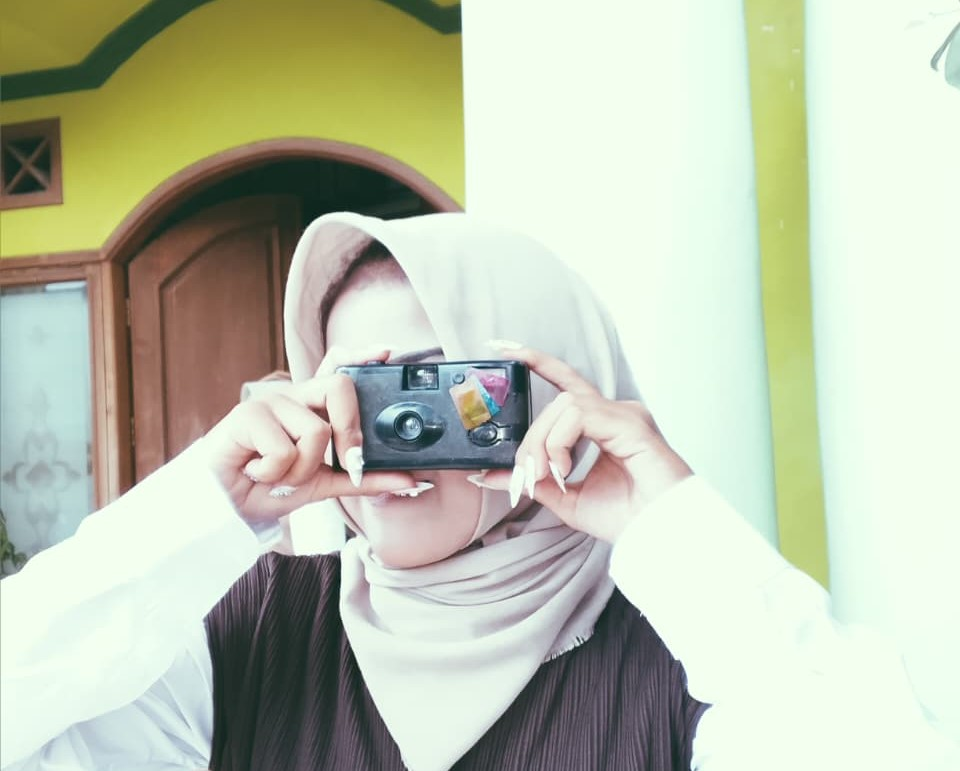

Ristyandhita Eva Wahyuningtyas
Junior Web Developer
SMKN Takeran · Rekayasa Perangkat Lunak
Kirim Pesan Buka Kalkulator RaporHALO, SELAMAT DATANG
Tentang Saya
Saya siswa kelas 10 Rekayasa Perangkat Lunak yang sedang belajar membuat website menggunakan HTML, CSS, dan JavaScript. Saya tertarik pada desain web yang responsif dan tampilan yang nyaman digunakan.